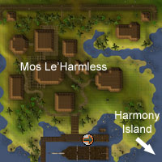

")
Harmony Island (Members)
Warning | Introduction | Location | Points of Interest | Personalities | Quests
Mi-Gor's Motley Minions | Miscellaneous
Mi-Gor's Motley Minions | Miscellaneous
Warning
You must have started The Great Brain Robbery quest to gain access to Harmony Island.
Introduction

Okay, so they're all a bunch of 'enhanced' zombies at the moment, but really, they're nice chaps at the heart of it.
Location

Points of Interest

The wheat field twins with the cabbage field to help keep the monastery's symmetrical aesthetic, projecting the ordered life of the monks that pray within its walls.
There is also a run-aground pirate ship to the north of the island. The huge gaping hull that allows you access onto it clearly highlighting that it will never sail again.
Personalities
![[image]](../../img/main/kbase/npc/area_guides/chathead/brother_tranquility.gif) As a monk, Brother Tranquility is a forgiving and kind-hearted man. As a zombie, he is much the same, just a bit more decomposed. His tonsure (monk's bald spot) is nicely contrasted by the staples keeping his skull in place.
|
![[image]](../../img/main/kbase/npc/area_guides/chathead/mi_gor.gif) He may be 'short' of temper, but this sinister zombie Surgeon General has more of a brain fixation (and more brains) than his entire crew combined. His nefarious scheme to create a race of zombie pirates with some actual intelligence is made all the easier by his lack of morals. He requires some kind of mask apparatus to breathe, a side effect of which puts his evil laugh up there with the best of them.
|
|
| Brother Tranquility can be found on the ground floor of the mill on Harmony Island. | Mi-Gor can be found in the monastery on Harmony Island. |
Quests
There are no quest start points on Harmony Island.
Mi-Gor's Motley Minions
![[image]](../../img/main/kbase/npc/area_guides/zombie_pirate.gif) In life they were a scourge on the seas, a blight on the briny oceans of RuneScape. Now they're all zombies, they don't even need to worry about scurvy anymore, making them even more dangerous to lollygagging landlubbers.
|
![[image]](../../img/main/kbase/npc/area_guides/sore_bones.gif) Sorebones are Mi-Gor's highly-skilled team of surgeons - at least in terms of removing people's brains. Whether this is done in the operating room or just to any passing adventurer makes no bones to them.
|
|
| Zombie pirates can be found scattered all over Harmony Island. | Sorebones are only found inside the monastery on Harmony Island. |
Miscellaneous
- There is a tinderbox spawn point on the deck of the run-aground pirate ship, toward the bow.
- If you lose your Ring of Charos after completing The Great Brain Robbery, it can be pickpocketed again from Dr Fenkenstrain in the basement of Harmony Island's mill.

More articles in
Other
|
|